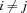
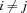
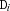
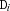
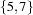

5.8 Symbolic Propagators
The following propagators do domain propagation or amplify the store by constraints X::Spec, where Spec may also contain holes.
-
distinct {FD.distinct*Dv}All elements in
Dvare pairwise distinct. If one element becomes determined, the remaining elements are constrained to be different from it. If two variables become equal, the propagator fails, e. g.{FD.distinct [A A B]}will fail even ifAis not determined.-
distinctB {FD.distinctB*Dv}All elements in
Dvare pairwise distinct. Uses bounds propagation, but does not use value propagation asFD.distinct. Also fails, if two variables are equal. Currently uses the quadratic algorithm for propagation by Puget described in [Pug98].-
distinctD {FD.distinctD*Dv}All elements in
Dvare pairwise distinct. Uses full domain propagation. Also fails, if two variables are equal. Is based on Régin's algorithm [Rég94].-
distinctOffset {FD.distinctOffset*Dv+Iv}All sums
 are pairwise distinct, i. e. for all  holds
are pairwise distinct, i. e. for all  holds  . If one  becomes determined, the remaining elements
. If one  becomes determined, the remaining elements  are constrained to be different from
are constrained to be different from  .
. -
distinct2 {FD.distinct2*Dv1+Iv1*Dv2+Iv2}Assume that all arguments are tuples of width n. Then the propagator's operational semantics is defined as follows.
or Dv1.i+ IV1.i=<: Dv1.j
[] Dv1.j+ IV1.j=<: Dv1.i
[] Dv2.i+ IV2.i=<: Dv2.j
[] Dv2.j+ IV2.j=<: Dv2.i
endThis propagator may be used to express that a number of rectangles must not overlap in the two-dimensional space. In this case
Dv1andDv2may denote the x-coordinates and y-coordinates of the lower left corner of the rectangles, respectively.Iv1andIv2may denote the widths and heights of the rectangles, respectively.atMost{FD.atMost*D*Dv+I}atLeast{FD.atLeast*D*Dv+I}exactly{FD.exactly*D*Dv+I}At most, at least, exactly
Delements ofDvare equal toI. The operational semantics is defined as follows. LetVFoldLbe eitherFoldLorRecord.foldLdepending on the type ofDvandS = {VFoldL Dv fun{$ In D1} {FD.plus In D1=:I} end 0}The propagator
FD.atMost,FD.atLeastandFD.exactlyare defined byD>=:S,D=<:SandD=:S, respectively.-
element {FD.element*D1+Iv*D2}The
D1-th element ofIvisD2.It propagates as follows. For each integer i in the domain of
D1, the i-th element ofIvis in the domain ofD2; and no other values. For each value j in the domain ofD2, all positions where j occurs inIsare in the domain ofD1; and no other values. For example,{FD.int [1 3] X} {FD.element X [5 6 7 8] Y}will constrain
Yto .D1is constrained to be greater than 0.